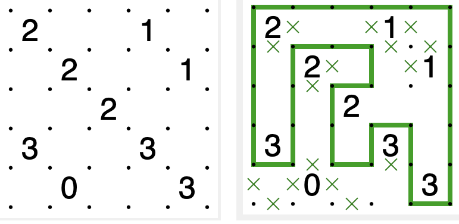
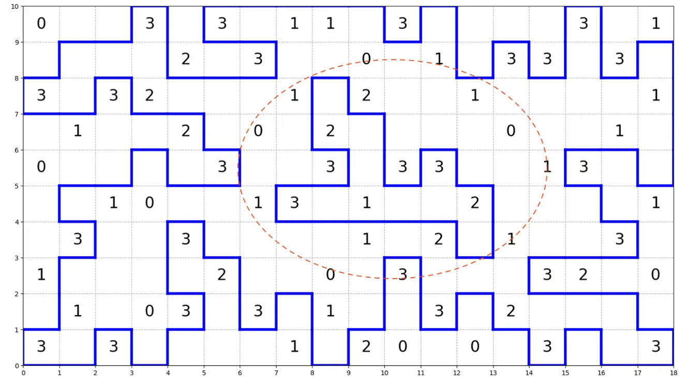

一种快速求解环路类逻辑谜题的方法: AddCircuit¶
本文主要讨论一类逻辑谜题 (Logic Puzzle)，尤其是环路类逻辑谜题（make-a-loop style），比如数回（Slitherlink）、简单回路（Simple Loop）、珍珠（Masyu, Pearl）、仙人指路（Yajilin）等，并介绍一个用于求解这一整类谜题的高效且灵活的约束规划方法，以及这种方法在开源求解器 OR-Tools 下完整的数值试验的结果。
首先介绍Nikoli的经典逻辑谜题数回（Slitherlink）的规则：
- 画线连接棋盘上的点形成一条唯一的回路，每个节点被访问不超过1次。
- 围成每个格子的4条边中，被连接成回路的边的数量必须等于格中数字。
示意图如下：

我们所讨论的环路类谜题，唯一共性的约束即是第一条：把给定节点连接成一个唯一的、闭合的回路，每个节点只经过至多一次。
整数规划方法: Add Cuts¶
五年前已经有知乎文章提到了一种基于整数规划的解法：
【补充url】
这里用数学语言表述为：
对于一个\(m\times n\)的网格，有\((m+1)\times(n+1)\)个非重复的顶点。记顶点集合为\(V\)。由于每个顶点至多和 4 个其他顶点相连（有一些顶点仅和两个顶点相连），整个网格共有\(2mn+m+n\)条无向边。记边的集合为\(E\)，我们后续求解的时候是可以把无相边转成有向边来处理的。
我们用 0-1 决策变量\(x_{ij}\)表示边\((i,j)\)是否被连接。记原始的\(m\times n\)棋盘为\(G\)，\(G_{a,b}\)表示原来棋盘第\(a\)行第\(b\)列的数字，\(S_{a,b}\)表示棋盘第\(a\)行第\(b\)列方格周围的边的集合。
所以我们可以把方格数字约束写成：
仿照图论流平衡约束，对于每个顶点流入流出是相等的；同时每一个顶点至多流出一条边。所以可以写成：
这里因为我们用\((i,j)\)表示边，在终盘里\((i,j)\)和\((j,i)\)实际上是同一个边，所以可以加一个约束，限制这两条边至多只能选一个。
上述两个约束保证了可以生成一些环路，但是不保证整个图都可以连成一个完整的环，而是存在子环 (Subtour)。比如下图红圈内的情况：

此时需要动态地添加去子环约束保证结果可行。也就是每次找到解后，模仿 TSP 中的DFJ formulation，加入如下约束：
约束的本质是限制围成这个子环路的所有边在终盘里不会全部被选中。即假设这个子环路由\(|T|\)条边组成，约束这\(|T|\)个边至多同时被选中\(|T|-1\)个。
做离散优化的伙伴对这个套路应该感觉十分耳熟，在几乎任何一个整数规划求解器中都可以通过类似方法实现求解。在很长时间里，我一直以为这是这类环路问题的 final-answer——至少足够易懂，足够简单了。
约束规划方法：Force Component¶
我们也可以不用整数规划，而是用约束规划方法，比如CP- SAT求解器，利用类似Flood Fill 的约束表示，直接硬写出这个模型的约束以此手动保证“所有节点连通”，从而不必反复迭代加 cuts。这个实现可以参考这位的 github 仓库。我们简单分析下：
依然是对于一个\(m \times n\)的网格：
- 顶点集\(V\)：共\((m+1)(n+1)\)个顶点
- 边集\(E\)：共\(2mn + m + n\)条无向边
- 原始棋盘\(G\)：\(G_{a,b}\)表示第\(a\)行第\(b\)列的数字
- 边集映射\(S_{a,b}\)：第\(a\)行第\(b\)列方格周围的边的集合
采用有向边建模，定义：
其中\(x_{ij} = 1\)表示选择从顶点\(i\)到顶点\(j\)的有向边。
在保证数字约束：
流平衡 + 度数约束：
其中\(N(i)\)表示顶点\(i\)的相邻顶点集合。
此外，我们额外对“边”建立连通性约束：将每条边视为一个"节点"，两条边相邻当且仅当它们共享一个顶点。从唯一的"根边"出发，向外传播递减的高度值。 类似一个“水往低处流”的样式。
为方便描述，定义无向边的选择变量：
对每条边\(e = (i,j) \in E\)，引入：
| 变量 | 含义 | 取值范围 |
|---|---|---|
| \(r_e\) | 边\(e\)是否是根 | \(\{0,1\}\) |
| \(h_e\) | 边\(e\)的高度 | \(\{0, 1, \ldots, \|E\|\}\) |
| \(\mu_e\) | 边\(e\)的相邻边中最大高度 | \(\{0, 1, \ldots, \|E\|\}\) |
| \(z_e\) | 前缀零标记（辅助选根） | \(\{0,1\}\) |
定义边的相邻关系：
这种硬编码的约束关系需要一点逻辑推理在内，事实上通过逻辑析取等可以表示为：
(1) 唯一根
设边按某固定顺序排列为\(e_1, e_2, \ldots, e_{|E|}\)：
根的定义（第一条被选中的边）：
唯一性约束：
(2) 高度传播规则
(3) 连通性保证
这个连通性可以简单证明：满足上述约束的解中，所有\(y_e = 1\)的边构成单一连通分量，因为：
- 根边 \(e^*\) 的高度为 \(|E|\)（最大值）
- 任何与根相邻的激活边，高度为 \(|E| - 1\)
- 高度沿路径递减：\(h_{e'} = h_e - 1\)（若 \(e'\) 从 \(e\) 获得高度）
- 若存在不连通的激活边\(e\)：
- 它无法从根获得高度传播
- 所有相邻边要么未激活（\(h = 0\)），要么同样不连通
- 导致 \(\mu_e = 0\)，从而 \(h_e = -1\) 或 \(h_e = 0\)
- 违反约束 \(y_e = 1 \Rightarrow h_e > 0\)
- 矛盾，故所有激活边必须与根连通
新方法: AddCircuit¶
事实上，这种“环路”式的逻辑谜题如此常见，以至于在 puzzlink 的谜题网页上就罗列了 52种 (Make a Loop) 的谜题，这不禁让人思考：前人一定也在此基础上做过一些探索，针对这种哈密顿回路问题的高效求解做过一些尝试，至少有这些问题是可以讨论的：
- 是否存在一些高效的约束传播机制，使得我们动态添加cuts这个过程更加紧？
- 是否存在一些求解器层面的加速，使得这种方法的整体性能得到提升？
- 是否存在一些更加灵活、通用、简洁的表达，能更加好地表示“哈密顿回路约束”，并把它和我们的逻辑谜题的场景结合（因为逻辑谜题场景下，对于节点选中、涂色，同样可能存在一整套逻辑析取合取的约束）？
事实上，OR-Tools 的 CP-SAT 求解器中恰好有一个完美匹配的方法——AddCircuit。
AddCircuit 约束一组布尔变量控制的有向弧，使选中的弧恰好构成一个覆盖所有必选节点的单一回路。
更具体地说：
- 输入：一个有向图，每条弧关联一个布尔变量（True 表示选中）
- 输出：约束选中的弧形成恰好一个闭合回路
- 特性：通过"自环"机制，节点可以标记为"可选"——自环为 True 表示该节点不参与回路，此时名义上它也构成了一个环Circuit，但是，在我们逻辑谜题的场景下，它不被计算入最终的回路中。
AddCircuit 采用的是增量路径维护 + 即时冲突检测的策略，而非"高度传播"那种声明式建模的方式。相比之前的基础的高度传播方法而言，它的策略更独特：
| 方面 | 高度传播方法 | AddCircuit |
|---|---|---|
| 思路 | 声明"什么是合法解" | 追踪"当前状态是否能走向合法解" |
| 实现 | 添加大量辅助变量和约束 | 专用传播器（Propagator） |
| 检测时机 | 求解器统一推理 | 每次赋值后立即检查 |
| 集成程度 | 用户层建模 | 求解器内核级集成 |
同时，集成在 CP-SAT 求解器下的 ortools，针对 AddCircuit 这个方法背后的数学模型，有了一些优化，以此来兼容我们上面的第三个问题：把类似哈密顿回路的问题和我们的逻辑谜题的场景结合起来：
给定有向图\(G = (V, A)\)，其中： - 顶点集\(V = \{0, 1, \ldots, n-1\}\) - 弧集\(A\)：每条弧\((i, j)\)关联一个布尔变量\(\ell_{ij}\)
其中：
- 必须节点：没有自环\(i \to i\)的节点，或自环被设为 False 的节点
- 可选节点：有自环且自环为 True 时，表示该节点不参与回路
AddCircuit 内部会自动强制执行：
AddCircuit 采用增量更新机制：当某个弧的指示器\(\ell_{ij}\)被赋值为 True 时，调用 IncrementalPropagate：
对于约束传播，也有一套定制的约束传播机制：对于每个节点\(n\)，追踪其所在的部分路径：
从算法和实现上看，AddCircuit 的优势来源于：
| 优势点 | 具体表现 |
|---|---|
| 零辅助变量 | 不引入任何额外的决策变量 |
| 增量传播 | 每次赋值后\(O(n)\)时间内完成检查 |
| 即时冲突检测 | 不需要等待完整赋值就能发现不可行 |
| 精准原因生成 | 冲突子句只包含相关的弧，有利于 CDCL 学习 |
| 内核级集成 | 与 CP-SAT 的 Trail、Watcher 机制深度结合 |
而对于利用CP-SAT求解逻辑谜题这个特定的使用场景而言，AddCircuit有一些意外的优势：
- 开箱即用，对于满足 Single Loop 类的几乎所有谜题，都可以通过它获得接近一个数量级的加速；
- 灵活的节点控制，能轻松将其他的逻辑表达式嵌入到环路求解的代码中（比如：要求某些节点在某些条件下必须只能被选中一个等）
- 可复用性高
一些简单的数值试验¶
在 Janko 网站上可以搜集到 1100 + 条 不同规模的 Slitherlink 棋盘，加上从其他网页搜集到的超大规模网格，我们可以对上述方法做一些有趣的数值试验。除了 Slitherlink 外，我们同样可以搜集到许多类似的逻辑谜题，包括： BalanceLoop, CountryRoad, Detour, DotchiLoop, DoubleBack, EntryExit, GrandTour, Koburin, Masyu, MoonSun, Shingoki, Yajilin. 其中的绝大部分都具有比 Slitherlink 更加复杂的逻辑规则。
所有的代码均用 Python + OR-Tools 实现，其正确性均已得到验证。
作为比较，整数规划的 AddCuts 方法以 SCIP 开源求解器实现，求解 1153 个 Slitherlink 的平均耗时 0.77s，尽管其在中大规模的部分算例上已经展现出远超基础约束规划方法的优秀性能，但是依然存在一系列 bad case，37 个算例用时超过 3 s，对于线路占比不高的棋盘效率恶化严重，最差情况下需要 201s。而在 AddCircuit 夹持下，最长求解时间被大幅度压缩至 1.63s，平均求解时间压缩至 0.067 s，降低了 91%。
作为另一种比较，纯粹依赖约束规划方法在应用上则效果差了很多，不仅无法保证在 30s 内解出\(17 \times 17\)规模的算例，其在\(10 \times 10\)规模上的计算时间也已接近 0.5 s 了，其质量逊于上述两种。
如果把视野投远，我们在更多复杂谜题上测试 AddCircuit，则会发现它具有相当优秀的可扩展性，即使是 \(60 \times 60\) 的谜题，也均能在 2s 内完成计算，即使考虑诸如转弯（Shingoki）、长度限制（Balance Loop）或者区域进出限制一类的谜题（Entry Exit），其在上千格点上的计算时间依然控制在 0.8s 以内。
#.S: 计算的算例数量, Max Size: 最大规模的算例尺寸（高 * 宽）; Avg T(s) 平均求解时间； Max T(s) 最长求解时间;#.V: 验证结果并确认为正确的算例数量。
| No. | Puzzle | #.S | Max Size | Avg T(s) | Max T(s) | #.V |
|---|---|---|---|---|---|---|
| 0 | Slitherlink | 1153 | 60x60 | 0.067 | 1.630 | 1153 |
| 1 | BalanceLoop | 70 | 17x17 | 0.060 | 0.217 | 70 |
| 2 | CountryRoad | 270 | 15x15 | 0.027 | 0.089 | 270 |
| 3 | Detour | 80 | 13x12 | 0.025 | 0.372 | 80 |
| 4 | DotchiLoop | 60 | 17x17 | 0.036 | 0.083 | 60 |
| 5 | DoubleBack | 100 | 26x26 | 0.025 | 0.235 | 100 |
| 6 | EntryExit | 170 | 16x16 | 0.038 | 0.081 | 170 |
| 7 | GrandTour | 350 | 15x15 | 0.019 | 0.067 | 350 |
| 8 | Koburin | 150 | 12x12 | 0.021 | 0.043 | 150 |
| 9 | Masyu | 828 | 40x58 | 0.067 | 0.774 | 828 |
| 10 | MoonSun | 200 | 30x45 | 0.041 | 0.326 | 200 |
| 11 | Shingoki | 103 | 41x41 | 0.083 | 1.220 | 103 |
| 12 | Yajilin | 610 | 39x57 | 0.052 | 0.520 | 610 |
上述谜题的求解代码封装在我自己开发的Python包puzzlekit 中，提供了一个简短可靠的API与可视化脚本供测试；所有谜题的数据开源在 Github puzzlekit-dataset 中。